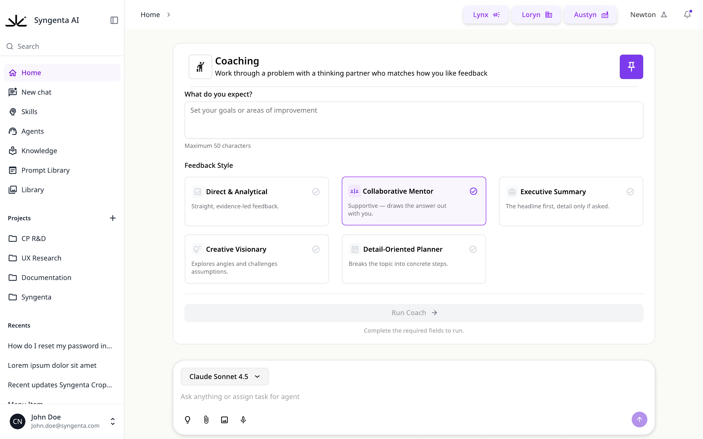
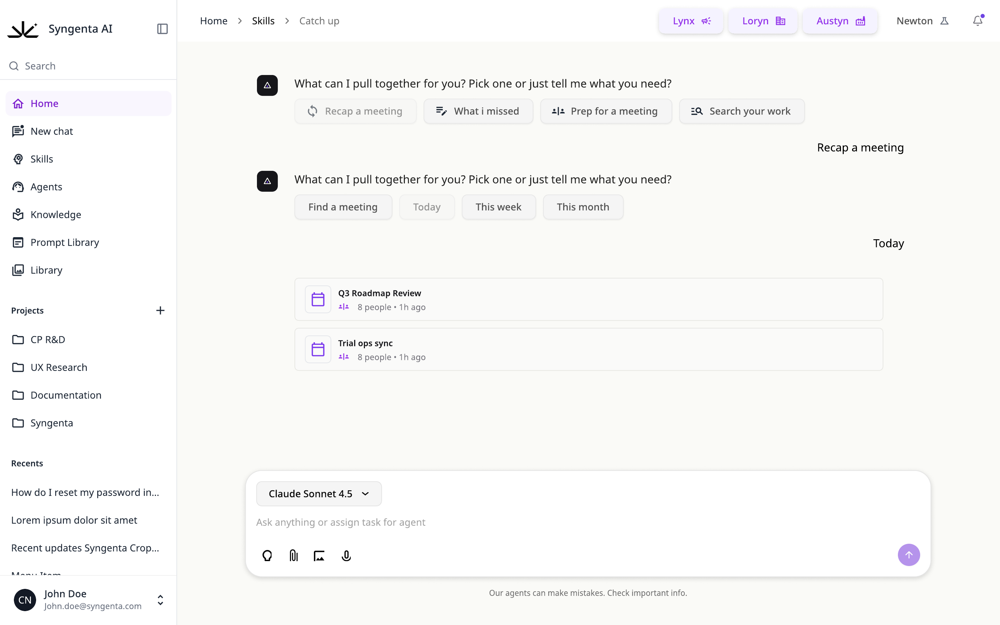
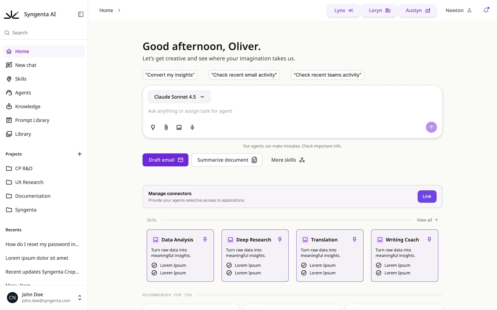
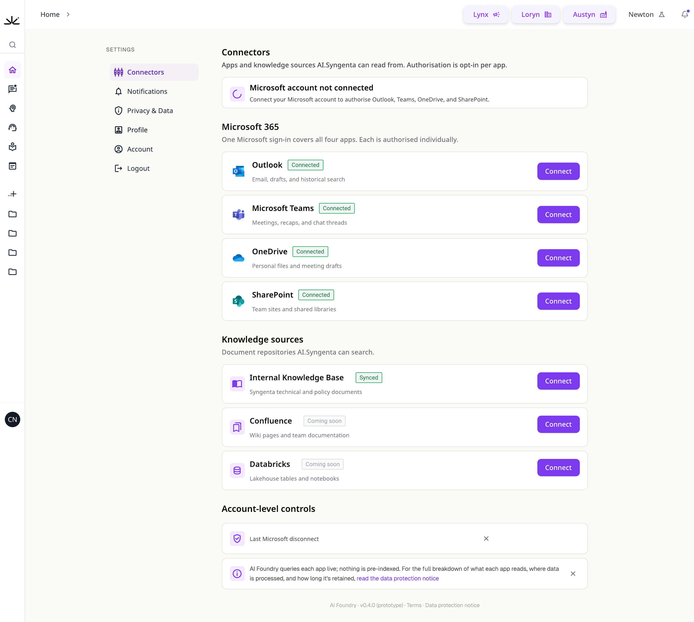
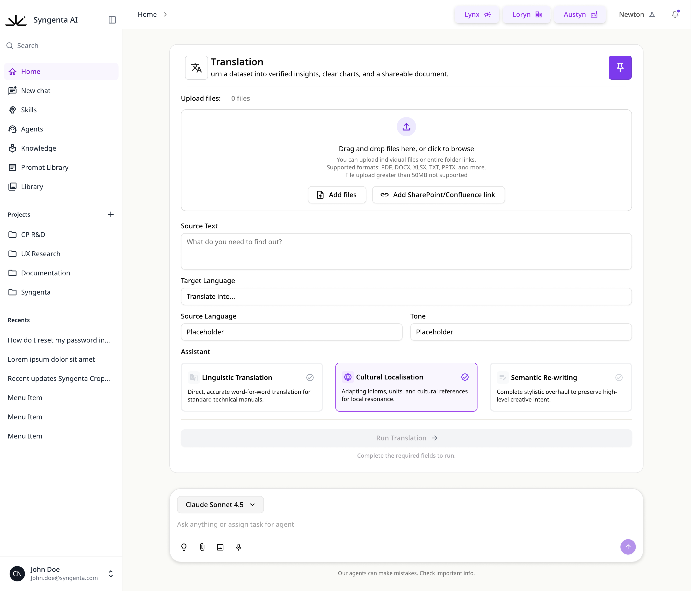
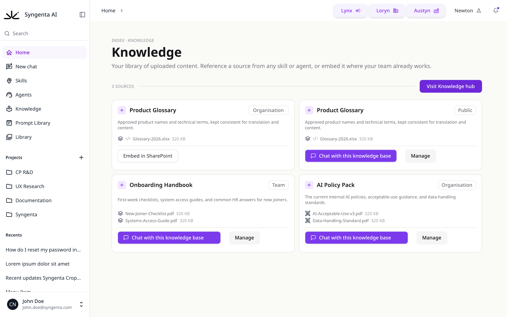

Overview
Enterprise teams were facing a fragmented AI landscape — separate agents, tools, and knowledge bases scattered across the organisation, each with its own entry point and interaction model. I led the research and UX design for AI Foundry Chat: a unified hub giving every employee a single, intuitive front door to the company's AI capabilities.
The goal was to move beyond a simple chat window and answer a harder question: how should an enterprise AI hub behave? Should it aggregate, route invisibly, or anticipate needs before users ask? I designed a research programme to let real users across the business answer that.
Research
I conducted and synthesised 15 moderated user testing sessions with participants spanning sales, marketing, operations, and technical roles — deliberately recruiting across AI maturity levels to capture both newcomer friction and power-user ambition.
Each session was synthesised into a structured insight report — maturity rating, role lens, and pattern tally — building a cumulative evidence base. By the final session the picture was fully saturated: recurring themes were corroborated by four and five-plus independent participants.
Insights
The synthesis converged on a clear strategic direction: the hub shouldn't just answer — it should anticipate. Users wanted role-aware, proactive intelligence: log in and see next-best-action recommendations drawn from connected systems, tuned to their role and region.


Four distinct archetypes emerged — Newcomer, Domain Practitioner, Power User, and Governor — each drawn as a step-by-step journey defining what they need to reach first value. These journeys became the design's organising framework.
Design
Every major interface decision traced back to tester evidence. The homepage was rebuilt around a "Recommended for you" strip — the home of the role-aware recommendation engine — with redundant chrome stripped out to keep density low for newcomers while preserving depth for power users.
The wider system design included an agent header with plain-language descriptions, a side-nav library for skills and prompts, integrated knowledge bases, confidence and accuracy indicators on responses, a community hub for shared practices, and Apple-style visual onboarding to carry newcomers to their first successful outcome.

Trust and governance were designed in from the start: an opt-in connectors model with per-app authorisation and plain-language data protection, and skills like Translation that expose their assistant behaviour — literal, localised, or creative — as an explicit user choice.



Results
The programme closed with a consolidated ideas-and-journeys synthesis and a stakeholder check-in that turned research into an actionable, prioritised roadmap — every item tagged Now, Next, or North Star and backed by named tester evidence.
This project demonstrates research operating at its highest leverage — not decorating decisions already made, but generating the strategic direction itself. The evidence base gave stakeholders the confidence to commit, and gave the design a defensible answer to every "why".